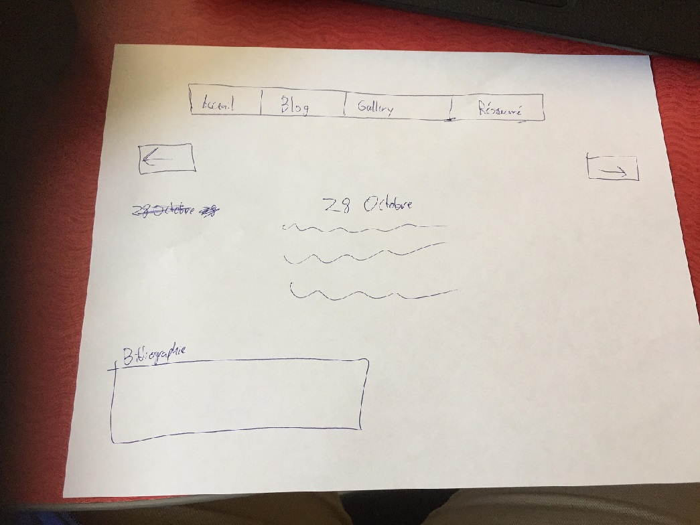

Mon plan pour cete semaine c'est de demander des question a M. Roy, l'enseignant du cours de communication, a propos de comment bien concevoir un site web. Le site pourrait etre meilleur. Comme j'ai mentione avant, je veux avoir un style simple, avec pas trops de couleurs. Aussi, je veux faciliter la tache de naviguer entre les differents entree de journal, j'essayerai peut etre de l'implementer aujourd'hui.
De plus, j'ai besoin de trouver un facon a corriger les textes que j'ai ecrit plus facilement, car il faut que j'utilise un clavier american pour ecrire le HTML, mais pour le francais c'est une autre question.
Ce que j'ai en tete comme plan.